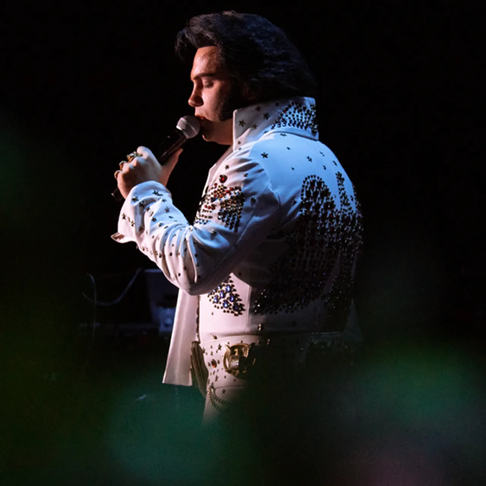
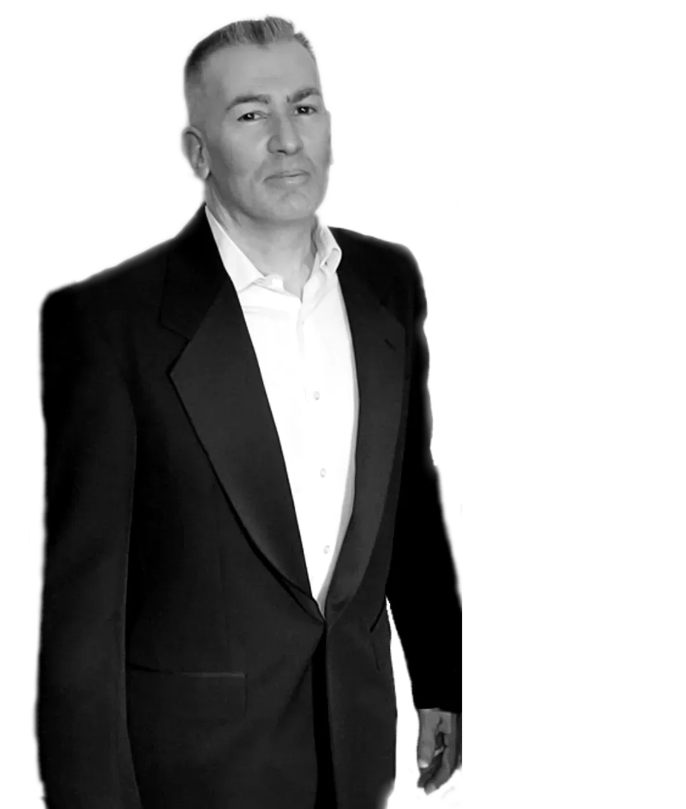
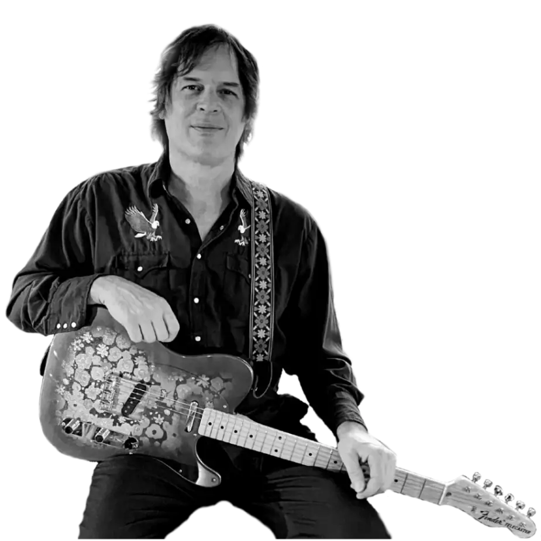

| Dan Fontaine |
 |
Lead Vocals |
Dan Fontaine grew up in Massachusetts and was raised listening to the music of Elvis Presley. At 16, he began his music career singing and playing guitar at Hillcrest Church where his father pastors.
In 2014, Dan began performing his tribute to Elvis all over New England working at his craft which aims to capture the energy, passion, and vocal prowess of The King. He is a gifted band leader,
originally fronting Fellowship of The King and currently performing his regional tribute show, "Viva Las Elvis: From Sun To Vegas" feat. Memphis Sun Mafia Band. Dan Fontaine is an award-winning Elvis Tribute Artist,
and has competed at Images of The King and Ultimate Elvis festivals/competitions nationally and internationally. |
| Henry James |
|
Bass |
Henry has been playing in various popular bands throughout the local music scene in New England since 1978. He's a self-taught musician, known for a solid groove,
impeccable timing and has shown himself to be proficient in many genres of music. Henry is well-loved and respected in the region for his musicianship and presents the series “Bass-Hacks” on his YouTube channel. |
| James Thomas |
 |
Drums |
James has a lifetime of drumming experience, attending both Berklee College of Music, and Musician's Institute in Hollywood, CA. He currently owns and runs the day to day
operations at The Drum Academy in Leominster instructing over 40 students weekly. He has performed in a plethora of musical situations including blues,
jazz, funk, rock, country, Motown R&B, concert band, orchestra, and popular musicals. He has performed with legendary groups The Temptations and The
Supremes and is currently the engine that drives the Memphis Sun Mafia. |
| Vlad Odessa |
|
Piano/Keyboard |
Vlad expressed his interest in playing piano the first time when he was 5. Since then, music has become a lifelong endeavor. He received his formal music training in his hometown in Ukraine.
Living with his parents in Budapest, Hungary in the 80s' Vlad got a full appreciation for rock n' roll, hard rock, and heavy metal. He satisfied his musical passion by being a part of a student
band, and later military college band, also earning his Bachelor in Journalism. After moving to the United States in 2004, Vlad has worked with many bands and projects including,
“A Night of Zeppelin.” Being a part of the Memphis Sun Mafia is an opportunity to reveal a full appreciation for the music created by Elvis Presley, and to work with other great musicians inspired by the King of Rock n' Roll. |
| John Scotti |
 |
Lead Guitar |
A seasoned musician, John boasts extensive experience as a guitarist in both tribute and original bands across New York, Colorado, and Massachusetts. Having toured nationally and internationally,
Scotti is not only a versatile performer but also a skilled recording engineer and producer. Currently, Scotti holds a key role as an educator at Berklee College of Music, actively shaping curriculum for Berklee Online.
His dual career underscores a commitment to both music performance and education. From diverse music scenes to the global stage, John Scotti's journey highlights his dedication to the craft and his
pivotal role in preserving the iconic sound of Elvis Presley. |
| Kyleigh Arenas |
|
Vocals |
Kyleigh is a talented and versatile soprano vocalist who grew up loving and listening to all kinds of music, including Elvis Presley.
She attended the School of Rock for seven years where she both took lessons as well as performed in their show-team. She now works as a
vocal coach for all ages at the school! Kyleigh has a strong love for music and the Memphis Sun Mafia band. |
| Chris Ryan |
|
Trombone |
Chris began playing at an early age and attended Berklee College of Music. He has vast experience in a wide variety of playing situations including
classical wind groups, jazz combos, big bands, and marching bands, but his true passion is rock, funk and soul. Chris can be found playing regularly
throughout New England with funk & soul band, Wicked Betty & the Bad Habits and the Memphis Sun Mafia. |